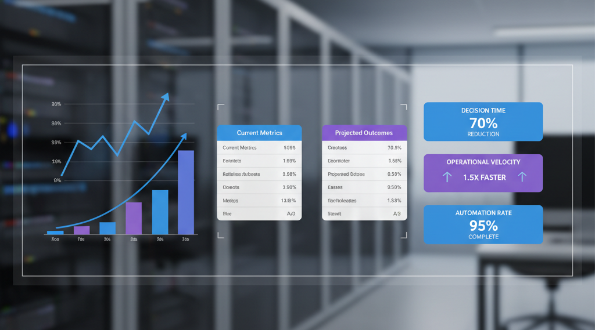

Decisões mais rápidas com Python: relatórios e comparações automáticas ao alcance do negócio
Por que isso importa agora
Tomar decisões com dados confiáveis, em horas — não semanas —, é uma vantagem competitiva. Python permite automatizar a coleta, padronização e comparação de informações de múltiplas fontes (sistemas internos, planilhas, APIs) e entregar relatórios claros para diretoria e áreas de negócio. O resultado: menos tempo gasto, menos retrabalho e mais foco em ação.
O que fazemos com Python
- Integramos dados de diferentes origens (sistemas internos, planilhas, catálogos corporativos) em um único fluxo.
- Geramos relatórios executivos em CSV, Excel e painéis simples para acompanhamento.
- Comparamos informações “lado a lado” em tempo real para encontrar divergências e priorizar ações.
- Padronizamos critérios para classificar e segmentar portfólios com transparência.
Exemplos práticos:
- Consolidar o catálogo de iniciativas de uma diretoria em uma planilha única, com enriquecimento (status, responsáveis, datas-chave).
- Encontrar interseções entre listas (ex.: “clientes elegíveis” x “clientes com proposta ativa”) e exportar com indicadores visuais.
- Criar rotinas diárias que atualizam relatórios automaticamente — sem abrir planilhas manualmente.
Como isso reduz tempo e risco
- Menos atividades manuais: scripts transformam tarefas repetitivas em “um clique”.
- Dados padronizados: relatórios consistentes, auditáveis e comparáveis ao longo do tempo.
- Visão unificada: informações dispersas em um único painel para priorizar decisões.
- Alertas precoces: divergências detectadas antes de virarem problemas.
Resultados que já observamos
- Geração de planilhas executivas com dezenas de colunas (classificação por critérios de negócio, indicadores de documentação, links e status), prontas para consumo por liderança.
- Relatórios incrementais por lotes para ambientes grandes, permitindo acompanhamento contínuo sem sobrecarregar infraestrutura.
- Redução de horas de trabalho por semana em atividades de levantamento, validação e consolidação.
Como começamos (sem jargão técnico)
- Definimos a pergunta de negócio e os indicadores necessários (ex.: “quais projetos estão prontos para migração?”).
- Mapeamos as fontes de dados: onde estão hoje (repositórios, planilhas, catálogos e sistemas internos).
- Automatizamos o fluxo com Python: leitura, limpeza, padronização, comparação e geração de saída (CSV/Excel/dashboard).
- Agendamos atualizações (diárias/semi-horárias) e publicamos em um local único (SharePoint/Drive/portal interno).
Boas práticas que adotamos
- Segurança do token e dados sensíveis; nada de credenciais em código ou commit.
- Logs e rastreabilidade: cada execução deixa evidências claras do que foi processado.
- Parametrização: os mesmos scripts atendem diferentes áreas apenas mudando entradas.
- Entregas incrementais: começamos simples, medimos valor e evoluímos em ciclos curtos.
O que você ganha
- Rapidez: relatórios e comparações prontos quando você precisa.
- Confiança: dados consistentes e regras claras de classificação.
- Foco: menos tempo caçando informações, mais tempo decidindo e executando.
Se quiser, podemos demonstrar em 15 minutos como automatizar um caso real do seu time (por exemplo, leitura de um repositório, cruzamento com planilhas e geração de um painel executivo). Bastam as fontes e os critérios de decisão — o resto, o Python faz por você.
Três exemplos simples em Python (sem jargão)
1) Crédito: unificar propostas e priorizar análises
from pathlib import Path
import csv
base = Path('C:/dados/credito')
arquivos = list(base.glob('**/propostas_*.csv'))
campos = ['cpf', 'score', 'valor_solicitado', 'status']
with open('C:/saidas/credito_priorizar.csv', 'w', newline='', encoding='utf-8') as out:
w = csv.DictWriter(out, fieldnames=campos + ['prioridade'])
w.writeheader()
for arq in arquivos:
with open(arq, newline='', encoding='utf-8') as f:
for row in csv.DictReader(f):
score = float(row.get('score', 0) or 0)
prioridade = 'ALTA' if score >= 700 else 'MEDIA' if score >= 500 else 'BAIXA'
row['prioridade'] = prioridade
w.writerow({c: row.get(c, '') for c in campos + ['prioridade']})
Analogia: em vez de olhar proposta por proposta, você recebe uma fila ordenada pelo que mais importa.
2) Sinistros: identificar inconsistências para auditoria ágil
import csv
def ler_ids(caminho, chave):
with open(caminho, newline='', encoding='utf-8') as f:
return {row[chave] for row in csv.DictReader(f)}
registro = ler_ids('C:/dados/sinistros_registro.csv', 'n_sinistro')
pagamento = ler_ids('C:/dados/sinistros_pagamento.csv', 'n_sinistro')
sem_pagamento = registro - pagamento
sem_registro = pagamento - registro
with open('C:/saidas/sinistros_auditoria.csv', 'w', newline='', encoding='utf-8') as out:
w = csv.writer(out)
w.writerow(['tipo', 'n_sinistro'])
for i in sorted(sem_pagamento):
w.writerow(['registrado_sem_pagamento', i])
for i in sorted(sem_registro):
w.writerow(['pago_sem_registro', i])
Analogia: duas listas de itens; o script aponta o que ficou sem par correspondente.
3) Estoque: atualizar indicadores diários sem abrir planilhas
from datetime import datetime
import csv
hoje = datetime.now().strftime('%Y-%m-%d')
registros = [
{'indicador': 'itens_em_estoque', 'valor': 4280, 'data': hoje},
{'indicador': 'ruptura_%', 'valor': 1.6, 'data': hoje},
]
with open('C:/saidas/estoque_diario.csv', 'a', newline='', encoding='utf-8') as out:
w = csv.DictWriter(out, fieldnames=['indicador', 'valor', 'data'])
if out.tell() == 0:
w.writeheader()
for r in registros:
w.writerow(r)
Analogia: como preencher um quadro na parede todos os dias, automaticamente.
Conclusão
Python transforma dados dispersos em insights acionáveis, permitindo que sua equipe tome decisões mais rápidas e confiáveis. Em vez de gastar horas coletando e cruzando informações manualmente, você obtém relatórios padronizados, comparações automáticas e indicadores atualizados em tempo real.
Os benefícios são claros: menos tempo gasto em tarefas repetitivas, maior precisão nos dados e foco renovado no que realmente importa — interpretar resultados e agir estrategicamente.
Próximo passo → vamos conversar sobre um caso específico do seu negócio. A Cara Core Informática desenvolve soluções sob medida, com suporte técnico e treinamento aos finais de semana e feriados.
Hashtags
Contato
- E-mail: suporte@caracore.com.br
- Site: www.caracore.com.br
- LinkedIn: Cara Core Informática
Conecte-se conosco no LinkedIn para mais conteúdos sobre desenvolvimento e inovação tecnológica!
Seguir no LinkedIn